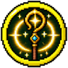

Chierico
Cura, protegge e punisce i non morti
Una classe per personaggio: per cambiarla serve il Reset. Si parte dal primo nodo e dal tronco, poi si sceglie un ramo; si può passare in un ramo vicino una volta sola, e alla fine si prende una sola Abilità Finale.
Primo nodo
+2 vita, +50% cure ricevute, +25% potere delle cure che fai, +25 mana; -25% danno in mischia, -20% danno a distanza. Lancia gli incantesimi sacri (anche dalle pergamene di ogni rarità); delle altre scuole solo pergamene comuni e non comuni. Armi: solo i bastoni e gli attrezzi.
Tronco
Le cure che fai curano il 5% in più.
Curi te o il compagno che guardi di 3 cuori. Ricarica 30 secondi.
Rami
Le cure che fai curano il 5% in più.
+20 mana.
Le cure che fai curano il 10% in più.
Nodo proprio del ramo: +40 mana. Prenderlo chiude i punti d'incontro: resti nel tuo ramo.
Curi te e i compagni entro 8 blocchi di 4 cuori. Ricarica 2 minuti.
Strada Sacerdote. La Preghiera di cura cura il 20% in più.
Strada Sacerdote. La Preghiera lascia anche Rigenerazione I per 6 secondi.
Strada Santo. La Preghiera si ricarica il 20% più in fretta.
Strada Santo. Quando un compagno vicino scende sotto il 20% di vita lo curi subito di 3 cuori. Una volta ogni 2 minuti.
+2 vita massima (1 cuore).
Danni magici subiti: -5%.
+1 armatura.
Nodo proprio del ramo: Con uno scudo in mano hai +3 armatura. Prenderlo chiude i punti d'incontro: resti nel tuo ramo.
Tu o il compagno che guardi non prendete danni per 3 secondi. Ricarica 3 minuti.
Strada Protettore. La Barriera divina dura 1 secondo in più.
Strada Protettore. Il 20% dei danni presi dai compagni vicini li prendi tu al posto loro.
Strada Inquisitore. La Barriera toglie anche veleno, appassimento e lentezza.
Strada Inquisitore. Chi colpisce un compagno protetto dalla Barriera prende 4 danni.
I tuoi colpi in mischia fanno il 2,5% di danno in più.
Incantesimi sacri: +4% danno.
+20% danno contro zombie, scheletri e altri non morti.
Nodo proprio del ramo: I tuoi colpi in mischia fanno il 10% di danno in più. Prenderlo chiude i punti d'incontro: resti nel tuo ramo.
Lanci un martello di luce: 8 danni, 16 ai non morti. Ricarica 20 secondi.
Strada Crociato. I tuoi colpi in mischia fanno 2 danni in più ai non morti.
Strada Crociato. +30% danno ai nemici sotto il 30% di vita.
Strada Fulgore. Il martello rallenta il nemico per 2 secondi.
Strada Fulgore. Il martello fa danno anche ai nemici vicini a quello colpito.

La fame scende il 5% più piano.
Corsa: +5%.
Cure ricevute: +10%.
Nodo proprio del ramo: I compagni entro 8 blocchi si muovono il 5% più veloce. Prenderlo chiude i punti d'incontro: resti nel tuo ramo.
I compagni entro 8 blocchi rigenerano mezzo cuore ogni 5 secondi.
Strada Pastore. Le tue aure arrivano a 12 blocchi.
Strada Pastore. I compagni nella tua aura prendono il 10% di danni in meno.
Strada Missionario. Dopo un'uccisione tu e i compagni vicini correte il 20% più veloci per 8 secondi.
Strada Missionario. Quando muori resti per 10 secondi come spirito che cura i compagni vicini.
Punti d'incontro
Nodi condivisi tra due rami vicini: da qui si può saltare nell'altro ramo.
Quando curi un compagno gli dai anche Resistenza I per 3 secondi. È l'alternativa al nodo proprio del ramo: da qui continui nel tuo ramo o passi in quello accanto, una volta sola in tutto l'albero.
I tuoi colpi in mischia curano il compagno più vicino di mezzo cuore (una volta ogni 3 secondi). È l'alternativa al nodo proprio del ramo: da qui continui nel tuo ramo o passi in quello accanto, una volta sola in tutto l'albero.
Il nemico che colpisci brilla e i compagni gli fanno il 10% di danno in più per 6 secondi. È l'alternativa al nodo proprio del ramo: da qui continui nel tuo ramo o passi in quello accanto, una volta sola in tutto l'albero.
Abilità Finali
Se ne sceglie una sola.
Rianimi un giocatore morto da meno di 30 secondi (anche fuori dal party), lì dove è caduto, con metà vita. Ricarica 12 minuti.
Una colonna di luce (raggio 5 blocchi) cade su di te per 6 secondi: i nemici dentro prendono 6 danni al secondo, i compagni dentro si curano di 1 cuore al secondo. Ricarica 5 minuti.
Per 15 secondi tu e i compagni entro 10 blocchi fate il 25% di danno in più, prendete il 20% di danni in meno e vi muovete il 15% più veloci. Ricarica 6 minuti.